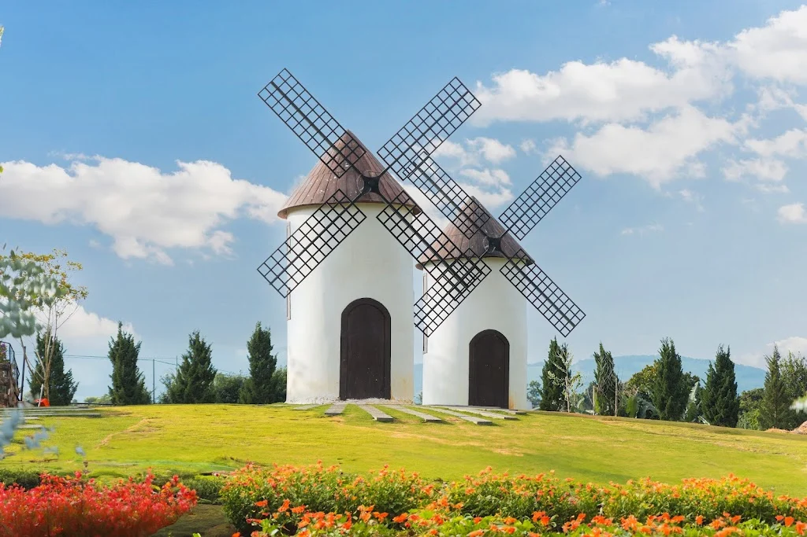
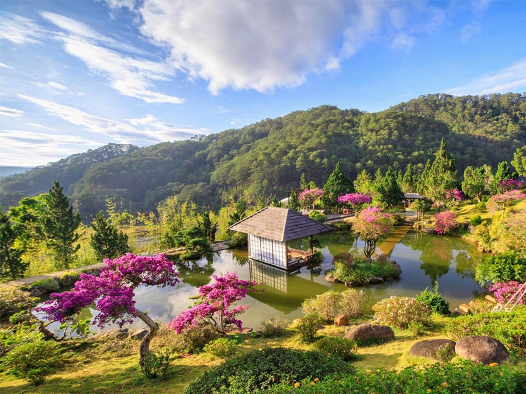

Đà Lạt - Thành Phố Ngàn Hoa
"Ẩn mình giữa cao nguyên Lâm Viên lộng gió, Đà Lạt luôn mang trong mình một vẻ đẹp lãng mạn và dịu dàng làm say đắm lòng người. Tận hưởng cái se lạnh của những sớm mai sương mờ ảo ảnh, thả mình vào không gian xanh ngắt của đồi thông và nhâm nhi ly cà phê ấm nóng sẽ mang lại cho bạn những phút giây thư thái tuyệt vời."


Điểm nổi bật của Tour
- Khám phá thiên nhiên mộng mơ: Check-in tại các đồi hoa rực rỡ sắc màu, thung lũng tình yêu và tận hưởng không khí trong lành của rừng thông nguyên sinh.
- Trải nghiệm văn hóa cà phê độc đáo: Dừng chân tại các quán cà phê có view ôm trọn thung lũng mây trôi, thưởng thức hương vị cà phê cao nguyên đậm đà.
- Tham quan kiến trúc cổ kính: Khám phá nhà thờ Domaine de Marie, ga Đà Lạt cổ kính mang đậm dấu ấn kiến trúc Pháp hoài niệm.
Lịch trình tóm tắt (3 Ngày 2 Đêm)
- Ngày 1: Đón khách tại thành phố Đà Lạt - Viếng thăm Quảng trường Lâm Viên - Dạo hồ Xuân Hương về đêm.
- Ngày 2: Săn mây sớm tại đồi chè Cầu Đất - Khám phá vườn hoa thành phố - Thưởng thức ẩm thực chợ đêm.
- Ngày 3: Mua sắm đặc sản mứt sấy và atiso - Check-in điểm dừng chân cuối - Tiễn đoàn kết thúc hành trình.